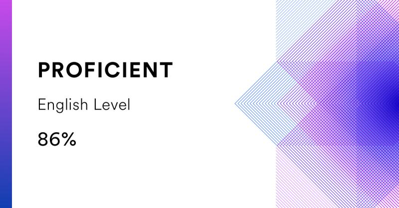

About Me
I have wide experience of working as an analyst in a large IT company. Now I hold the position of a leading QA engineer. I am a highly motivated and detail-oriented QA Engineer with experience in manual and automated testing. I love learning, developing my skills and working as part of an adaptable team.
Work Experience
- June 2023 — Present
AQA Engineer - January 2018 — June 2023
QA Engineer / Business Analyst - September 2017 — November 2018
Manual QA / Analyst
Education
- Rolling Scopes School — Full Stack Engineering course
- Professional development in software testing and test automation
Code Example
describe('Manage Jenkins - Verify Title', () => {
it('verifies the title of the Manage Jenkins page', () => {
cy.get('.task-link-wrapper > a[href="/manage"]').click();
cy.get('.jenkins-app-bar__content h1')
.should('be.visible')
.and('have.text', 'Manage Jenkins');
});
});Languages
- Russian — Native
- English — C1
- French — A2
- Chinese — A1
- German — A2
English level according to the EF SET online test.
